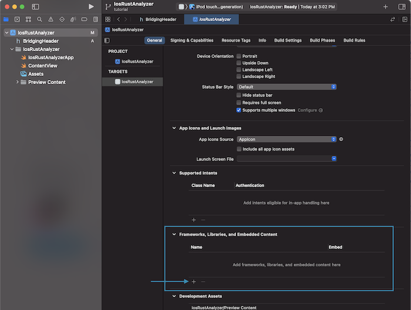

swift-bridge
swift-bridge generates bindings for calling Rust from Swift and vice versa.
The swift-bridge book is a work-in-progress with many chapter either sparse or empty.
If you have a question that isn't answered by the book yet, please open an issue.
Building
Building an application that uses Swift and Rust means compiling Swift source code and Rust source code into a final binary.
If there was a super-compiler that knew about both Swift and Rust code you could tell that compiler to compile source files from both languages into a final binary.
This doesn't exist, so instead you need to use both a Swift compiler and a Rust compiler in a two-stepped approach.
First you compile one of the languages into a native library.
Then you use the second compiler to compile the other language into your final binary, along the way linking in the native library that you created.
Here's how this process would look if you were linking in a Rust native library when compiling a Swift executable.
┌──────────────────────────────────┐ ┌───────────────────┐
│// Rust code │ │// Swift Code │
│ │ │ │
│pub extern "C" fn rust_hello() { │ │rust_hello() │
│ println!("Hi, I'm Rust!") │ │ │
│} │ │ │
└──────────────────────────────────┘ └───────────────────┘
│ │
Compile Rust │ │ Compile Swift to
to native lib │ │ executable
│ │
▼ Link in Rust │
┌────────────────────────────────┐ native lib │
│ libmy_rust_crate.a │───────────────────────┤
└────────────────────────────────┘ │
│
▼
┌──────────────────────────────────┐
│ Final Executable Binary │
│ │
└──────────────────────────────────┘
In a similar fashion, you could also compile Swift code into a native library and then link it in when compiling your Rust code.
Which direction to choose largely comes down to whichever is easiest based on the build tools that you already use or plan to use.
This chapter walks you through a few different ways to build Swift and Rust code.
Xcode + Cargo
To demonstrate how to set up an Xcode + Cargo project, we'll create a new iOS application that makes use of swift-bridge in order
use rust-analyzer to perform syntax highlighting of Rust code.
When we're done we'll have a simple application where we can type Rust code into a text area and see the syntax highlighted version below it.

Project Setup
Create a new project.
cargo new --lib ios-rust-analyzer
cd ios-rust-analyzer
Install cargo-lipo.
cargo install -f cargo-lipo
Create a new Xcode project within the ios-rust-analyzer directory.
Xxode > File > New Project > iOS > App
We'll name it IosRustAnalyzer.


Your directory should now look something like:
$ tree -L 2
.
├── Cargo.toml
├── IosRustAnalyzer
│ ├── IosRustAnalyzer
│ └── IosRustAnalyzer.xcodeproj
└── src
└── lib.rs
Create a bash script that we can use to build the application
touch IosRustAnalyzer/build-rust.sh
chmod +x IosRustAnalyzer/build-rust.sh
#!/bin/bash
##################################################
# We call this from an Xcode run script.
##################################################
set -e
if [[ -z "$PROJECT_DIR" ]]; then
echo "Must provide PROJECT_DIR environment variable set to the Xcode project directory." 1>&2
exit 1
fi
cd $PROJECT_DIR
export PATH="$HOME/.cargo/bin:$PATH"
# Without this we can't compile on MacOS Big Sur
# https://github.com/TimNN/cargo-lipo/issues/41#issuecomment-774793892
if [[ -n "${DEVELOPER_SDK_DIR:-}" ]]; then
export LIBRARY_PATH="${DEVELOPER_SDK_DIR}/MacOSX.sdk/usr/lib:${LIBRARY_PATH:-}"
fi
TARGETS=""
if [[ "$PLATFORM_NAME" = "iphonesimulator" ]]; then
TARGETS="aarch64-apple-ios-sim,x86_64-apple-ios"
else
TARGETS="aarch64-apple-ios,x86_64-apple-ios"
fi
# if [ $ENABLE_PREVIEWS == "NO" ]; then
if [[ $CONFIGURATION == "Release" ]]; then
echo "BUIlDING FOR RELEASE ($TARGETS)"
cargo lipo --release --manifest-path ../Cargo.toml --targets $TARGETS
else
echo "BUIlDING FOR DEBUG ($TARGETS)"
cargo lipo --manifest-path ../Cargo.toml --targets $TARGETS
fi
# else
# echo "Skipping the script because of preview mode"
# fi
Create a new build phase that calls ./build-rust.sh — the bash script that we created.
Be sure to drag it before the Compile Sources step.


Create a directory Generated where our generated Swift and C code will go.
mkdir IosRustAnalyzer/Generated
touch IosRustAnalyzer/Generated/.gitignore
Give IosRustAnalyzer/Generated/.gitignore the following contents:
# IosRustAnalyzer/Generated/.gitignore
*
!.gitignore
Create a new bridging header and name it BridgingHeader.h.

Give it these contents:
#ifndef BridgingHeader_h
#define BridgingHeader_h
#include "Generated/SwiftBridgeCore.h"
#include "Generated/ios-rust-analyzer/ios-rust-analyzer.h"
#endif
Set the bridging header to $(PROJECT_DIR)/BridgingHeader.h

In the Cargo.toml, set the crate-type and build script.
[package]
name = "ios-rust-analyzer"
version = "0.1.0"
edition = "2021"
build = "build.rs"
[build-dependencies]
swift-bridge-build = "0.1"
[lib]
crate-type = ["staticlib"]
[dependencies]
swift-bridge = "0.1"
ide = {git = "https://github.com/rust-analyzer/rust-analyzer"}
Create our build script.
touch build.rs
// In build.rs fn main() { // TODO... }
Build the Cargo project once so that we can generate the files that we'll be linking to.
PROJECT_DIR="${PWD}/IosRustAnalyzer" ./IosRustAnalyzer/build-rust.sh
Set the Debug library search path to $(PROJECT_DIR)/../target/universal/debug, and the Release library
search path to $(PROJECT_DIR)/../target/universal/release

Go to IosRustAnalyzer > General > Frameworks, Libraries, and Embedded Content > + to add and click Add Other > Add Files.
Select the target/universal/debug/libios_rust_analyzer.a file.


Select the same target/universal/debug/libios_rust_analyzer.a in the link binaries with libraries build phase.

Add the following to the build.rs file that we created earlier.
const XCODE_CONFIGURATION_ENV: &'static str = "CONFIGURATION"; fn main() { let out_dir = "IosRustAnalyzer/Generated"; let bridges = vec!["src/lib.rs"]; for path in &bridges { println!("cargo:rerun-if-changed={}", path); } println!("cargo:rerun-if-env-changed={}", XCODE_CONFIGURATION_ENV); swift_bridge_build::parse_bridges(bridges) .write_all_concatenated(out_dir, env!("CARGO_PKG_NAME")); }
Build again so that we can genrate the files that we're including from BridgingHeader.h.
PROJECT_DIR="${PWD}/IosRustAnalyzer" ./IosRustAnalyzer/build-rust.sh
Right click on IosRustAnalyzer and click Add Files To IosRustAnalyzer. Add the entire Generated directory.


Pressing the Run button should now open up the iOS simulator with Xcode's default "Hello World" iOS app.

Rust
Now that we've set up our project, it's time to write some code!
Add the following to src/lib.rs.
#![allow(unused)] fn main() { #[swift_bridge::bridge] mod ffi { extern "Rust" { type RustApp; #[swift_bridge(init)] fn new() -> RustApp; fn generate_html(&self, rust_code: &str) -> String; } } pub struct RustApp {} impl RustApp { fn new() -> Self { RustApp {} } fn generate_html(&self, rust_code: &str) -> String { let (analysis, file_id) = ide::Analysis::from_single_file(rust_code.to_string()); analysis .highlight_as_html(file_id, true) .unwrap_or("Error".to_string()) } } }
Swift
Add the following to IosRustAnalyzerApp.swift
import SwiftUI
@main
struct IosRustAnalyzerApp: App {
var body: some Scene {
WindowGroup {
ContentView()
.environmentObject(RustAppWrapper(rust: RustApp()))
}
}
}
class RustAppWrapper: ObservableObject {
var rust: RustApp
init (rust: RustApp) {
self.rust = rust
}
}
Add the following to ContentView.swift
import SwiftUI
import WebKit
import Combine
struct ContentView: View {
@EnvironmentObject var rustApp: RustAppWrapper
@State private var rustSource = initialSource
@State private var rustHtml = ""
var body: some View {
VStack {
TextEditor(text: $rustSource)
.font(.caption)
.onReceive(Just(rustSource), perform: {sourceCode in
let html = rustApp.rust.generate_html(sourceCode).toString()
rustHtml = html
})
WebView(text: $rustHtml)
.frame(minWidth: 0, maxWidth: .infinity, minHeight: 0, maxHeight: .infinity)
}
}
}
struct WebView: UIViewRepresentable {
@Binding var text: String
func makeUIView(context: Context) -> WKWebView {
return WKWebView()
}
func updateUIView(_ uiView: WKWebView, context: Context) {
uiView.loadHTMLString(text, baseURL: nil)
}
}
let initialSource = """
fn main () {
let stack: Stack<u8> = Stack::default();
for val in 0..100 {
stack.push(val);
}
}
#[derive(Default)]
struct Stack<T>(Vec<T>);
impl<T> Stack<T> {
fn push(&mut self, val: T) {
self.0.push(val);
}
fn pop(&mut self) -> Option<T> {
self.0.pop()
}
}
"""
struct ContentView_Previews: PreviewProvider {
static var previews: some View {
ContentView()
.environmentObject(RustAppWrapper(rust: RustApp()))
}
}
Make sure that you see 4 files in your Compile Sources build phase.

Runing the application in the iPhone simulator using Cmd + R should show a working demo!
swiftc + Cargo
One approach to building Rust and Swift is to use Cargo to compile your Rust code and swiftc to compile your Swift code.
In this case, either Cargo needs to link to a compiled Swift native library, or swiftc needs to link to a compiled Rust
native library.
We'll use an example project to explore both of these approaches.
Project Setup
cargo new --lib swift-and-rust
cd swift-and-rust
# Cargo.toml
[build-dependencies]
swift-bridge-build = "0.1"
[dependencies]
swift-bridge = "0.1"
// src/main.rs fn main() { swift_and_rust::print_hello_swift(); }
#![allow(unused)] fn main() { // src/lib.rs pub use ffi::print_hello_swift; #[swift_bridge::bridge] mod ffi { extern "Rust" { fn print_hello_rust(); } extern "Swift" { fn print_hello_swift(); } } fn print_hello_rust() { println!("Hello from Rust") } }
// main.swift
run()
// lib.swift
func print_hello_swift() {
print("Hello from Swift")
}
func run() {
print_hello_rust()
}
# bridging-header.h
#ifndef BridgingHeader_h
#define BridgingHeader_h
#include "./generated/SwiftBridgeCore.h"
#include "./generated/swift-and-rust/swift-and-rust.h"
#endif /* BridgingHeader_h */
mkdir generated
Swift links to a Rust native library
Add the following to your Cargo.toml
# Cargo.toml
[lib]
crate-type = ["staticlib"]
// build.rs use std::path::PathBuf; fn main() { let out_dir = PathBuf::from("./generated"); let bridges = vec!["src/lib.rs"]; for path in &bridges { println!("cargo:rerun-if-changed={}", path); } swift_bridge_build::parse_bridges(bridges) .write_all_concatenated(out_dir, env!("CARGO_PKG_NAME")); }
# build-swiftc-links-rust.sh
#!/bin/bash
set -e
cargo build --target x86_64-apple-darwin
swiftc -L target/x86_64-apple-darwin/debug/ -lswift_and_rust -import-objc-header bridging-header.h \
main.swift lib.swift ./generated/swift-and-rust/swift-and-rust.swift ./generated/SwiftBridgeCore.swift
chmod +x build-swiftc-links-rust.sh
./build-swiftc-links-rust.sh
./main
# The output should be "Hello from Rust"
Rust links to a Swift native library
Unlike when we had swiftc linking in the Rust code, you do not need to set the crate-type
when you have Cargo linking in the Swift code.
// build.rs fn main() { println!("cargo:rustc-link-lib=static=my_swift"); println!("cargo:rustc-link-search=./"); }
# build-swift-static-lib.sh
#!/bin/bash
set -e
# Generate the bridging headers.
# Multiple files can be supplied with "-f" flag, e.g. "-f file1 -f file2".
# Substitute <package name> for the crate name in your Cargo.toml file.
swift-bridge-cli parse-bridges --crate-name <package name> -f src/lib.rs -o generated
swiftc -emit-library -static -module-name my_swift -import-objc-header bridging-header.h \
lib.swift ./generated/swift-and-rust/swift-and-rust.swift
chmod +x build-swift-static-lib.sh
./build-swift-static-lib.sh
cargo build
./target/debug/swift_and_rust
# The output should be "Hello from Swift"
Creating Swift Packages
In this chapter we'll walk through bundling your Rust library into a Swift Package.
Swift Packages that contain binary dependencies are only available on Apple platforms.
You cannot bundle your Rust code into a Swift Package if you plan to target Linux, Windows or any other non-Apple target.
Instead, use a building approach from one of the other building chapters.
Project setup
mkdir my-rust-lib && cd my-rust-lib
# Cargo.toml
[package]
name = "my-rust-lib"
[lib]
crate-type = ["staticlib"]
[build-dependencies]
swift-bridge-build = "0.1"
[dependencies]
swift-bridge = "0.1"
In src/lib.rs, add the following:
#![allow(unused)] fn main() { // src/lib.rs #[swift_bridge::bridge] mod ffi { extern "Rust" { fn hello_rust() -> String; } } fn hello_rust() -> String { String::from("Hello from Rust!") } }
Create a new build.rs file with the following contents:
touch build.rs
// build.rs use std::path::PathBuf; fn main() { let out_dir = PathBuf::from("./generated"); let bridges = vec!["src/lib.rs"]; for path in &bridges { println!("cargo:rerun-if-changed={}", path); } swift_bridge_build::parse_bridges(bridges) .write_all_concatenated(out_dir, env!("CARGO_PKG_NAME")); }
Create a new bash script for building our Rust native libraries along with a folder that we'll write our parsed bridges too.
touch build-rust.sh
chmod +x build-rust.sh
mkdir generated
# build-rust.sh
#!/bin/bash
set -e
THISDIR=$(dirname $0)
cd $THISDIR
# Build the project for the desired platforms:
cargo build --target x86_64-apple-darwin
cargo build --target aarch64-apple-darwin
mkdir -p ./target/universal-macos/debug
lipo \
./target/aarch64-apple-darwin/debug/libmy_rust_lib.a \
./target/x86_64-apple-darwin/debug/libmy_rust_lib.a -create -output \
./target/universal-macos/debug/libmy_rust_lib.a
cargo build --target aarch64-apple-ios
cargo build --target x86_64-apple-ios
cargo build --target aarch64-apple-ios-sim
mkdir -p ./target/universal-ios/debug
lipo \
./target/aarch64-apple-ios-sim/debug/libmy_rust_lib.a \
./target/x86_64-apple-ios/debug/libmy_rust_lib.a -create -output \
./target/universal-ios/debug/libmy_rust_lib.a
Install Rust toolchains for the desired platforms:
rustup target add x86_64-apple-darwin aarch64-apple-darwin aarch64-apple-ios x86_64-apple-ios aarch64-apple-ios-sim
Run the script to build our Rust libraries:
./build-rust.sh
We can now use the API or the CLI to package the generated bridging code and the Rust libraries into a Swift Package.
API
Here's an example of using the API to package up our generated bridging code and our Rust libraries into a Swift Package.
use std::path::PathBuf; use std::collections::HashMap; use swift_bridge_build::{CreatePackageConfig, ApplePlatform}; fn main() { swift_bridge_build::create_package(CreatePackageConfig { bridge_dir: PathBuf::from("./generated"), paths: HashMap::from([ (ApplePlatform::IOS, "target/aarch64-apple-ios/debug/libmy_rust_lib.a".into()), (ApplePlatform::Simulator, "target/universal-ios/debug/libmy_rust_lib.a".into()), (ApplePlatform::MacOS, "target/universal-macos/debug/libmy_rust_lib.a".into()), ]), out_dir: PathBuf::from("MySwiftPackage"), package_name: PathBuf::from("MySwiftPackage") }); }
CLI
You can use the swift-bridge CLI's create-package command in order to create a Swift Package.
First, install the CLI.
cargo install -f swift-bridge-cli
swift-bridge-cli --help
Then, run the following to package up your generated bridges and your Rust libraries into a Swift Package.
swift-bridge-cli create-package \
--bridges-dir ./generated \
--out-dir MySwiftPackage \
--ios target/aarch64-apple-ios/debug/libmy_rust_lib.a \
--simulator target/universal-ios/debug/libmy_rust_lib.a \
--macos target/universal-macos/debug/libmy_rust_lib.a \
--name MySwiftPackage
Using the Swift Package
We now have a Swift Package (in the MySwiftPackage directory) which we can include in other projects using the Swift Package Manager.
Using the package in an Xcode project
To add the package to an iOS app in Xcode, first open your project's .xcworkspace file.
Next, go to the package dependencies panel, and click on + -> Add Local -> and select the MySwiftPackage directory.
Next, go to the target's general panel and click the + button in the Frameworks, Libraries, and Embedded Content section.
Select Workspace -> MySwiftPackage -> MySwiftPackage.
Import and use it in the same way as the executable.
Using the package in an executable Swift project
Here is an example of an executable Swift project that depends on our newly created MySwiftPackage.
mkdir SwiftProject
touch SwiftProject/Package.swift
mkdir -p SwiftProject/Sources/SwiftProject
touch SwiftProject/Sources/SwiftProject/main.swift
Add these contents to SwiftProject/Package.swift.
// SwiftProject/Package.swift
// swift-tools-version:5.5.0
import PackageDescription
let package = Package(
name: "SwiftProject",
dependencies: [
.package(path: "../MySwiftPackage")
],
targets: [
.executableTarget(
name: "SwiftProject",
dependencies: [
.product(name: "MySwiftPackage", package: "MySwiftPackage")
])
]
)
And then add this to our SwiftProject/Sources/SwiftProject/main.swift file.
// SwiftProject/Sources/SwiftProject/main.swift
import MySwiftPackage
print(hello_rust().toString())
And now you can run your Swift project that depends on your Rust based Swift Package:
cd SwiftProject
swift run
# You should see "Hello from Rust!" in your terminal.
The Bridge Module
With swift-bridge you use a "bridge module" in order to declare your FFI interface.
#![allow(unused)] fn main() { #[swift_bridge::bridge] mod ffi { // Export Rust types and functions for Swift to use. extern "Rust" { type SomeRustType; fn some_type_method(&mut self) -> String; } // Import Swift types and functions for Swift to use. extern "Swift" { type SomeSwiftClass; #[swift_bridge(swift_name = "someClassMethod")] fn some_class_method(&self, arg: u8); } } }
Your bridge module can contain any number of extern "Rust" and extern "Swift" blocks, each declaring types
and functions to expose to and import from Swift, respectively.
How it Works
After you declare your bridge module, you use two code generators at build time to make the FFI layer that you described work.
One code generator generates the Rust side of the FFI layer, and the other code generator produces the Swift side.
Rust code generation
The #[swift_bridge::bridge] procedural macro parses your bridge module at compile time and then
generates the Rust side of your FFI layer.
Swift code generation
At build time you run swift-bridge-build (or swift-bridge-cli for non-Cargo based setups) on files that contain
bridge modules in order to generate the Swift and C code necessary to make your bridge work.
Let's Begin
This section's sub chapters will go into detail about the different ways that you can use bridge modules to connect Rust and Swift.
In the meantime, here's a quick peak of a simple bridge module:
#![allow(unused)] fn main() { // We use the `swift_bridge::bridge` macro to declare a bridge module. // Then at build time the `swift-bridge-build` crate is used to generate // the corresponding Swift and C FFI glue code. #[swift_bridge::bridge] mod ffi { // Create "transparent" structs where both Rust and Swift can directly access the fields. struct AppConfig { file_manager: CustomFileManager, } // Transparent enums are also supported. enum UserLookup { ById(UserId), ByName(String), } // Export opaque Rust types, functions and methods for Swift to use. extern "Rust" { type RustApp; #[swift_bridge(init)] fn new(config: AppConfig) -> RustApp; fn get_user(&self, lookup: UserLookup) -> Option<&User>; } extern "Rust" { type User; type MessageBoard; #[swift_bridge(get(&nickname))] fn informal_name(self: &User) -> &str; } // Import opaque Swift classes and functions for Rust to use. extern "Swift" { type CustomFileManager; type CustomIoError; // Async functions are supported. async fn save_file(self: &CustomFileManager, name: &str, contents: &[u8]) -> Result<(), CustomIoError>; } } struct User { nickname: String } }
Functions
swift-bridge allows you to export Rust functions for Swift to use and import Swift
functions for Rust to use.
#![allow(unused)] fn main() { #[swift_bridge::bridge] mod ffi { extern "Rust" { #[swift_name = "printGreeting"] fn print_greeting(name: &str); } extern "Swift" { fn add(lhs: usize, rhs: usize) -> usize; } } fn print_greeting(name: &str) { let sum = ffi::add(1, 2); println!("Hello {name}. 1 + 2 = {sum}!") } }
// Swift
printGreeting("Tolu")
func add(lhs: UInt, rhs: UInt) -> UInt {
lhs + rhs
}
Async Functions
swift-bridge supports async/await between Swift and Rust in both directions.
Async Rust Functions (called from Swift)
#![allow(unused)] fn main() { #[swift_bridge::bridge] mod ffi { extern "Rust" { type User; type ApiError; async fn user_count() -> u32; async fn load_user(url: &str) -> Result<User, ApiError>; } } }
// Swift
let totalUsers = await user_count()
do {
let user = try await load_user("https://example.com/users/5")
} catch let error as ApiError {
// ... error handling ...
}
Async Swift Functions (called from Rust)
You can call async Swift functions from Rust. The Swift function is declared with
async in the extern "Swift" block, and swift-bridge generates the necessary
callback-based FFI to bridge Swift's async/await to Rust's async/await.
#![allow(unused)] fn main() { #[swift_bridge::bridge] mod ffi { enum NetworkError { Timeout, NotFound, } extern "Swift" { async fn fetch_user_count() -> u32; async fn fetch_data(succeed: bool) -> Result<u32, NetworkError>; } } async fn example() { // Call async Swift function that returns a value let count = ffi::fetch_user_count().await; // Call async Swift function that can throw (returns Result in Rust) match ffi::fetch_data(true).await { Ok(data) => println!("Got data: {}", data), Err(e) => println!("Error: {:?}", e), } } }
// Swift
// Shared enums need Error conformance to be thrown
extension NetworkError: Error {}
func fetch_user_count() async -> UInt32 {
// ... async work ...
return 42
}
// IMPORTANT: Use typed throws to specify the exact error type
func fetch_data(succeed: Bool) async throws(NetworkError) -> UInt32 {
// ... async work that might fail ...
if !succeed {
throw NetworkError.Timeout
}
return 123
}
When a Swift function returns Result<T, E> in the bridge definition:
- The Swift function must use typed throws:
throws(E)(requires Swift 5.9+) - Throwing an error in Swift maps to
Err(E)in Rust - A successful return maps to
Ok(T) - Shared enums used as error types need
Errorconformance:extension MyError: Error {}
The typed throws requirement ensures compile-time verification that your Swift function only throws the expected error type, preventing runtime errors from type mismatches.
Function Attributes
#[swift_bridge(init)]
Used to generate a Swift initializer for Opaque Types.
#![allow(unused)] fn main() { // Rust #[swift_bridge::bridge] mod ffi { extern "Rust" { type RegularInitializer; #[swift_bridge(init)] fn new() -> RegularInitializer; } extern "Rust" { type FailableInitializer; #[swift_bridge(init)] fn new() -> Option<FailableInitializer>; } enum SomeError { case1, case2 } extern "Rust" { type ThrowingInitializer; #[swift_bridge(init)] fn new() -> Result<FailableInitializer, SomeError>; } } }
// Swift
let regularInitializer = RegularInitializer()
if let failableInitializer = FailableInitializer() {
// ...
}
do {
let throwingInitializer = try ThrowingInitializer()
} catch let error {
// ...
}
#[swift_bridge(Identifiable)]
Used to generate a Swift Identifiable protocol implementation.
#![allow(unused)] fn main() { // Rust #[swift_bridge::bridge] mod ffi { extern "Rust" { type SomeType; #[swift_bridge(Identifiable, swift_name = "someFunction")] fn some_function(&self) -> i16; } } }
// Generated Swift
// (rough example, the real generated code looks a little different)
class SomeType {
// ...
}
extension SomeType: Identifiable {
var id: UInt16 {
return self.someFunction()
}
}
#[swift_bridge(args_into = (arg_name, another_arg_name))]
Used to name the arguments that should have .into() called on them when
passing them to their handler function.
One use case is for exposing a third-party type as a shared struct.
#![allow(unused)] fn main() { mod pretend_this_is_some_third_party_crate { // We want to expose this third-party struct as a shared struct. pub struct UniqueId { id: u64 } } use pretend_this_is_some_third_party_crate::UniqueId; fn a_function (_some_arg: UniqueId, _an_arg: UniqueId, _cool_arg: u8) { // ... } mod ffi { struct FfiUniqueId(u64); extern "Rust" { // super::a_function does not take a `u64` or an `FfiUniqueId`, // but this still works since they both `impl Into<UniqueId>`. #[swift_bridge(args_into = (some_arg, an_arg))] fn a_function(some_arg: u64, an_arg: FfiUniqueId, cool_arg: u8); } } impl From<u64> for UniqueId { fn from(id: u64) -> UniqueId { UniqueId { id } } } impl Into<UniqueId> for ffi::FfiUniqueId { fn into(self) -> UniqueId { UniqueId(self.0) } } }
#[swift_bridge(associated_to = SomeType)]
Indicates that we are exposing an associated function for a type.
#![allow(unused)] fn main() { // Rust #[swift_bridge::bridge] mod ffi { extern "Rust" { type Message; // Exposes Message::parse to Swift as Message.parse #[swift_bridge(associated_to = Message)] fn parse(text: &str) -> Option<Message>; } } struct LongMessage(String); impl LongMessage { fn parse(text: impl ToString) -> Option<Self> { let text = text.to_string(); if text.len() > 10_000 { Some(LongMessage(text)) } else { None } } } }
// Swift
func maybeSendLongMessage(text: String) {
let maybeMessage = Message.parse(text)
if let message = maybeMessage {
// ... send the message
}
}
#[swift_bridge(get(field_name))]
Allows you to return the value of an opaque Rust struct's field.
You can prefix the field name with & or &mut in order to return a reference
or mutable reference to the field.
#![allow(unused)] fn main() { #[swift_bridge::bridge] mod ffi { extern "Rust" { type SomeType; // Returns self.my_u8 #[swift_bridge(get(my_u8))] fn my_u8(&self) -> u8; // Returns &self.my_string #[swift_bridge(get(&my_string))] fn my_string_reference(&self) -> &str; } } pub struct SomeType { my_u8: u8, my_string: String, } }
#[swift_bridge(get_with(field_name = path::to::function))]
Allows you to pass an opaque Rust struct's field into a function and then return the value that that function returned.
You can prefix the field name with & or &mut in order to pass the field
to the function by reference or mutable reference respectively.
#![allow(unused)] fn main() { use Clone; #[swift_bridge::bridge] mod ffi { extern "Rust" { type SomeType; // Returns ui_to_i16(self.my_u8) #[swift_bridge(get_with(my_u8 = u8_to_i16))] fn my_u8_converted(&self) -> u16; // Returns Clone::clone(&self.my_string) #[swift_bridge(get_with(&my_string = Clone::clone))] fn my_string_cloned(&self) -> String; // Returns string_to_u32(&self.my_string) #[swift_bridge(get_with(&my_string = string_to_u32))] fn my_string_parsed(&self) -> u32; } } pub struct SomeType { my_u8: u8, my_string: String, } fn u8_to_i16 (num: u8) -> i16 { num as i16 } fn string_to_u32(string: &str) -> u32 { string.parse().unwrap() } }
#[swift_bridge(label = "argName")]
Used to set the Swift argument label.
#![allow(unused)] fn main() { // Rust #[swift_bridge::bridge] mod ffi { extern "Rust" { fn add( #[swift_bridge(label = "leftHand")] left_hand: i32, right_hand: i32, ) -> i32; } } fn add(left_hand: i32, right_hand: i32) -> i32 { left_hand + right_hand } }
// Swift
let sum = add(leftHand: 10, 20)
#[swift_bridge(return_into)]
Allows a swift-bridge definition of fn foo() -> T to work for any fn foo() -> impl Into<T>.
#![allow(unused)] fn main() { use some_other_crate::Uuid; #[swift_bridge::bridge] mod ffi { struct FfiUuid { uuid: [u8; 16] } extern "Rust" { #[swift_bridge(return_into)] fn make_uuid() -> FfiUuid; } } impl From<Uuid> for ffi::FFiUuid { fn from(uuid: Uuid) -> ffi::FfiUuid { unsafe { std::mem::transmute(uuid) } } } use self::some_other_crate::make_uuid; mod some_other_crate { pub struct Uuid { uuid: [u8; 16] } // Here we can return a Uuid, even though swift-bridge is expecting an FfiUuid. pub fn make_uuid() -> Uuid { Uuid::new_v4() } } }
#[swift_bridge(return_with = path::to::some_function)]
Allows a swift-bridge definition of fn foo() -> T to work for a fn foo() -> U by
passing T to a fn(T) -> U.
#![allow(unused)] fn main() { #[swift_bridge::bridge] mod ffi { extern "Rust" { #[swift_bridge(return_with = some_module::convert_str_to_u32)] fn get_str_value_return_with() -> u32; } } fn get_str_value_return_with() -> &'static str { "123" } mod some_module { pub fn convert_str_to_u32(val: &str) -> u32 { val.parse().unwrap() } } }
#[swift_bridge(rust_name = "function_name")]
Use the given rust_name to find the function's implementation.
#![allow(unused)] fn main() { #[swift_bridge::bridge] mod ffi { extern "Rust" { #[swift_bridge(rust_name = "another_function")] fn some_function(); } } fn another_function() { } }
#[swift_bridge(swift_name = "functionName")]
Sets the function name that is used on the Swift side.
#![allow(unused)] fn main() { #[swift_bridge::bridge] mod ffi { extern "Rust" { // Exports `some_function` as `someFunction`. #[swift_bridge(swift_name = "someFunction")] fn some_function(); } extern "Swift" { // Imports `anotherFunction` as `another_function`. #[swift_bridge(swift_name = "anotherFunction")] fn another_function(); } } }
Opaque Types
This chapter explains how to expose opaque handles to Swift classes and Rust structs.
Exposing Opaque Rust Types
extern "Rust sections are used to expose Rust types and their associated methods and functions
so that they can be used from Swift code.
#![allow(unused)] fn main() { mod science; use science::{ScienceLab, Hydrogen, Oxygen, make_water}; #[swift_bridge::bridge] mod ffi { extern "Rust" { type Water; #[swift_bridge(associated_to = Water)] fn new() -> Water; fn is_wet(&self) -> bool; } extern "Rust" { type ScienceLab; type Hydrogen; type Oxygen; fn make_water( lab: &ScienceLab, hydrogen: Hydrogen, oxygen: Oxygen ) -> Water; } } pub struct Water; impl Water { fn new () -> Self { Water } fn is_wet(&self) -> bool { unreachable!("Seriously...?") } } }
Owned, Ref and RefMut
When you define a type in an extern "Rust" block, three corresponding Swift classes get generated.
// Equivalent to `SomeType` in Rust
class SomeType: SomeTypeRefMut {
// ...
}
// Equivalent to `&mut SomeType` in Rust
class SomeTypeRefMut: SomeTypeRef {
// ...
}
// Equivalent to `&SomeType` in Rust
class SomeTypeRef {
// ...
}
Here's an example of how &Type and &mut Type are enforced:
#![allow(unused)] fn main() { // Rust extern "Rust" { type SomeType; #[swift_bridge(init)] fn new() -> SomeType; // Callable by SomeType, SomeTypeRef and SomeTypeRefMut. fn (&self) everyone(); // Callable by SomeType, and SomeTypeRefMut. fn (&mut self) only_owned_and_ref_mut(); // Only callable by SomeType. fn (self) only_owned(); } extern "Rust" { fn make_ref() -> &'static SomeType; fn make_ref_mut() -> &'static mut SomeType; } }
// Swift
func methods() {
let someType: SomeType = SomeType()
let someTypeRef: SomeTypeRef = make_ref()
let someTypeRefMut: SomeTypeRefMut = make_ref_mut()
someType.everyone()
someType.only_owned_and_ref_mut()
someType.only_owned()
someTypeRefMut.everyone()
someTypeRefMut.only_owned_and_ref_mut()
someTypeRef.everyone()
}
func functions() {
let someType: SomeType = SomeType()
let someTypeRef: SomeTypeRef = make_ref()
let someTypeRefMut: SomeTypeRefMut = make_ref_mut()
takeReference(someType)
takeReference(someTypeRef)
takeReference(someTypeRefMut)
}
// Can be called with SomeType, SomeTypeRef and SomeTypeRefMut
func useSomeType(someType: SomeTypeRef) {
// ...
}
Opaque Type Attributes
#[swift_bridge(already_declared)]
The already_declared attribute allows you to use the same type in multiple bridge modules.
#![allow(unused)] fn main() { use some_crate::App; mod ffi { extern "Rust" { type App; #[swift_bridge(init)] fn new() -> App; } } #[swift_bridge::bridge] #[cfg(feature = "dev-utils")] mod ffi_dev_utils { extern "Rust" { // We won't emit Swift and C type definitions for this type // since we've already declared it elsewhere. #[swift_bridge(already_declared)] type App; fn create_logged_in_user(&mut self, user_id: u8); } } }
#[swift_bridge(Copy($SIZE))]
If you have an opaque Rust type that implements Copy, you will typically want to be
able to pass it between Swift and Rust by copying the bytes instead of allocating.
For example, let's say you have some new type wrappers for different kinds of IDs within your system.
use uuid:Uuid;
#[derive(Copy)]
struct UserId(Uuid);
#[derive(Copy)]
struct OrganizationId(Uuid);
You can expose them using:
#![allow(unused)] fn main() { #[swift_bridge::bridge] mod ffi { extern "Rust" { #[swift_bridge(Copy(16))] type UserId; #[swift_bridge(Copy(16))] type OrganizationId; } } }
The 16 indicates that a UserId has 16 bytes.
swift-bridge will add a compile time assertion that confirms that the given size is correct.
#[swift_bridge(Equatable)]
The Equatable attribute allows you to expose a Rust PartialEq implementation via Swift's
Equatable protocol.
#![allow(unused)] fn main() { #[swift_bridge::bridge] mod ffi { extern "Rust" { #[swift_bridge(Equatable)] type RustPartialEqType; } } #[derive(PartialEq)] struct RustPartialEqType(u32); }
// In Swift
let val1 = RustPartialEqType(5)
let val2 = RustPartialEqType(10)
if val1 == val2 {
print("Equal")
} else {
print("Not equal")
}
#[swift_bridge(Hashable)]
The Hashable attribute allows you to expose a Rust Hash trait implementation via Swift's
Hashable protocol.
#![allow(unused)] fn main() { #[swift_bridge::bridge] mod ffi { extern "Rust" { #[swift_bridge(Hashable)] type RustHashType; } } #[derive(Hash, PartialEq)] struct RustHashType(u32); }
// In Swift
let val = RustHashType(10);
let table: [RustHashType: String] = [:]
table[val] = "hello"
table[val] = "world"
//Should print "world"
print(table[val])
#[swift_bridge(Sendable)]
The Sendable attribute can be added to both opaque Rust and opaque Swift types.
When applied to an opaque Rust type, the generated Swift type will implement Swift's Sendable protocol.
swift-bridge will emit code that, at compile time, confirms that the Rust type implements Send + Sync.
When applied to an opaque Swift type, the generated Rust type will implement Rust's Send + Sync traits.
swift-bridge will emit code that, at compile time, confirms that the Swift type implements Sendable.
#![allow(unused)] fn main() { #[swift_bridge::bridge] mod ffi { extern "Rust" { #[swift_bridge(Sendable)] type MyRustType; } extern "Swift" { #[swift_bridge(Sendable)] type MySwiftType; } } }
#[swift_bridge(__experimental_ownership)]
The __experimental_ownership attribute instructs swift-bridge to emit code that takes advantage of Swift 6's
ownership features.
Once swift-bridge's support for Swift's ownership features stabilizes, this attribute will be removed and the behavior
that it enabled will become the default.
When swift-bridge's Swift ownership support is complete, the following will be supported:
- use Swift's
~Copyableextension to:- guarantee at compile time that Swift code cannot use a Rust type that it no longer owns
- prevent Swift from automatically copying mutable references to Rust types
Note that support for this attribute is a work in progress.
Work is tracked in Enforce ownership in generated Swift code https://github.com/chinedufn/swift-bridge/issues/155 .
#![allow(unused)] fn main() { #[swift_bridge::bridge] mod foo { extern "Rust" { #[swift_bridge(__experimental_swift_ownership)] type SomeType; } } }
Transparent Types
swift-bridge supports defining structs and enums who's fields can be
seen by both Swift and Rust.
Transparent Structs
You can define structs whos fields can be accessed by both Rust and Swift.
#![allow(unused)] fn main() { // Rust #[swift_bridge::bridge] mod ffi { #[swift_bridge(swift_repr = "struct")] struct SomeSharedStruct { some_field: u8, another_field: Option<u64> } extern "Rust" { fn some_function(val: SomeSharedStruct); } extern "Swift" { fn another_function() -> SomeSharedStruct; } } fn some_function (val: ffi::SomeSharedStruct) { // ... } }
// Swift
func another_function() -> SomeSharedStruct {
return SomeSharedStruct(some_field: 123, another_field: nil)
}
Struct Attributes
#[swift_bridge(already_declared)]
#![allow(unused)] fn main() { #[swift_bridge::bridge] mod ffi_1 { #[swift_bridge(swift_repr = "struct")] struct SomeSharedStruct { some_field: u8 } } use ffi_1::SomeSharedStruct; #[swift_bridge::bridge] mod ffi_2 { // The `already_declared` indicates that instead of creating a new Struct // we should use super::SomeSharedStruct; #[swift_bridge(already_declared, swift_repr = "struct")] struct SomeSharedStruct; extern "Rust" { fn some_function() -> SomeSharedStruct; } } }
#[swift_bridge(swift_repr = "...")]
Valid values are "struct" or "class".
How the struct should appear on the Swift side.
Swift structs are copy-on-write, so we do not allow you to mutate the fields of a swift_repr = "struct"
since you wouldn't be changing the original struct.
The swift_repr ="class" representation allows you to pass mutable references to shared structs between Rust and Swift.
#![allow(unused)] fn main() { // Rust #[swift_bridge::bridge] mod ffi { #[swift_bridge(struct_repr = "struct")] struct SomeStructReprStruct { field: UInt8, } #[swift_bridge(struct_repr = "class")] struct SomeStructReprClass { field: UInt8, } // NOTE: This is aspirational. Exposing methods on shared structs // doesn't actually work yet. extern "Rust" { // All structs can expose `&self` methods. fn repr_struct_ref(self: &SomeStructReprStruct); fn repr_class_ref(self: &SomeStructReprStruct); // Only structs with `swift_repr = "class"` can expose `&self` methods. fn repr_class_ref_mut(self: &mut SomeStructReprStruct); } } impl ffi::SomeStructReprStruct { fn repr_struct_ref(&self) { // ... } // swift-bridge cannot expose this method since mutable methods // on `swift_repr = "struct"` structs are not supported. fn repr_struct_ref_mut(&mut self) { // ... } } impl ffi::SomeStructReprClass { fn repr_class_ref(&self) { // ... } fn repr_class_ref_mut(&mut self) { // ... } } }
// Generated Swift
struct SomeStructReprStruct {
var field: UInt8
func repr_struct_ref() {
// ... call Rust's SomeStructReprStruct.repr_struct_ref() ...
}
}
class SomeStructReprClass: SomeStructReprClassRefMut {
// ...
}
class SomeStructReprClassRefMut: SomeStructReprClassRef {
// ...
}
class SomeStructReprClassRef {
// ...
}
Transparent Enums
You can define enums that can be created by both Rust and Swift.
#![allow(unused)] fn main() { // Rust #[swift_bridge::bridge] mod ffi { enum BarCode { Upc(i32, i32, i32, i32), QrCode { code: String } } extern "Rust" { fn get_link(code: BarCode) -> String; } extern "Swift" { fn create_bar_code(upc: bool) -> BarCode; } } fn get_link (code: BarCode) -> String { // ... } }
// Swift
func create_bar_code(upc: Bool) -> BarCode {
if upc {
return BarCode.Upc(8, 85909, 51226, 3)
} else {
return BarCode.QrCode(code: "ABCDEFG")
}
}
Enum Attributes
#[swift_bridge(already_declared)]
#![allow(unused)] fn main() { #[swift_bridge::bridge] mod ffi_1 { enum SomeTransparentEnum { Variant } } use ffi_1::SomeTransparentEnum; #[swift_bridge::bridge] mod ffi_2 { // The `already_declared` indicates that instead of creating a new enum // we should use super::SomeTransparentEnum; #[swift_bridge(already_declared)] enum SomeTransparentEnum {} extern "Rust" { fn some_function() -> SomeTransparentEnum; } } }
#[swift_bridge(swift_name = "...")]
Set the name that is used when generating the enum on the Swift side.
#![allow(unused)] fn main() { #[swift_bridge::bridge] mod ffi { #[swift_bridge(swift_name = "RenamedEnum")] enum SomeTransparentEnum { Variant } } }
Generics
#![allow(unused)] fn main() { #[swift_bridge::bridge] mod ffi { extern "Rust" { // Declare the generic type once. #[swift_bridge(declare_generic)] type MyType<A, B>; } extern "Rust" { // Bridge as many monomorphized types as you like. type MyType<u32, String>; fn some_function(arg: MyType<u32, String>) -> &str; type MyType<i8, Vec<u8>>; } } pub struct MyType<T, U> { my_field1: T, mu_field2: U } fn some_function(arg: MyType<u32, String>) -> &str { unimplemented!() } }
Generic Copy
You do not need to use the declare_geneic attribute for generic opaque Rust types
that use their Copy implementation across FFI bounds.
#![allow(unused)] fn main() { #[swift_bridge::bridge] mod ffi { extern "Rust" { #[swift_bridge(Copy(6))] type MyType<u32, u16>; fn some_function(arg: MyType<u32, u16>) -> &str; } } #[derive(Copy, Clone)] pub struct MyType<T, U> { my_field1: T, mu_field2: U } fn some_function(arg: MyType<u32, u16>) -> &str { unimplemented!() } }
Conditional Compilation
You can use the cfg attribute in order to conditionally generate bindings.
Here's an example of only generating some bindings when a "dev-utils" feature is enabled for the Rust crate.
#![allow(unused)] fn main() { struct App { users: HashMap<u8, Userg> } struct User { is_logged_in: bool } impl App { fn new() -> Self { App { users: HashMap::new() } } #[cfg(feature = "dev-utils")] fn create_logged_in_user(&mut self, user_id: u8); } mod ffi { extern "Rust" { type App; #[swift_bridge(init)] fn new() -> App; fn create_logged_in_user(&mut self, user_id: u8) { let user = User { is_logged_in: true }; self.users.insert(user_id, user) } } } // This example module contains methods that are useful // during testing and in SwiftUI previews. // It is only available when the Rust crate is compiled with the "dev-utils" feature. #[swift_bridge::bridge] #[cfg(feature = "dev-utils")] mod ffi_dev_utils { extern "Rust" { #[swift_bridge(already_declared)] type App; fn create_logged_in_user(&mut self, user_id: u8); } } }
Supported Conditions
Here are the conditions that are currently supported.
If you need a condition that isn't yet supported, please open an issue.
#[cfg(feature = "some-feature")]
#![allow(unused)] fn main() { #[swift_bridge] mod ffi { // The code generator will only generate the corresponding // Swift and C code if the "extra-utils" feature is enabled. #[cfg(feature = "extra-utils")] extern "Rust" { // .... } } }
Locations
Here are the different things that you can conditionally compile.
Bridge module
The bridge module can use the cfg attribute.
At build time the swift_bridge_build library determines whether or not a module will be compiled.
If not, we won't generate any of the corresponding C or Swift code for that module.
#![allow(unused)] fn main() { #[swift_bridge::bridge] // This module's bindings will only be available when the Rust crate is compiled with // the `ffi-extras` feature #[cfg(feature = "ffi-extras")] mod ffi_extras { // ... } }
extern "Rust" blocks
...This hasn't been implemented yet but should be easy...
Functions can methods can use the #[cfg] attribute.
#![allow(unused)] fn main() { #[swift_bridge::bridge] mod ffi { #[cfg(all(unix, target_pointer_width = "32"))] extern "Rust" { // ... } } }
Rust functions amd methods
...This hasn't been implemented yet but should be easy...
Functions and methods can use the #[cfg] attribute.
#![allow(unused)] fn main() { #[swift_bridge::bridge] mod ffi { extern "Rust" { // This function's will only be available when // the Rust crate is compiled targetting Windows. #[cfg(target_os = "windows")] fn play_solitaire(); } } }
Why a Bridge Module?
The swift-bridge project provides direct support for expressing the Rust+Swift FFI boundary using one or more bridge modules such as:
#![allow(unused)] fn main() { #[swift_bridge::bridge] mod ffi { extern "Rust" { fn generate_random_number() -> u32; } } fn generate_random_number() -> u32 { rand::random() } }
swift-bridge's original maintainer wrote swift-bridge for use in a cross platform application where he preferred to keep his FFI code separate from his application code.
He believed that this separation would reduce the likelihood of him biasing his core application's design towards types that were easier to bridge to Swift.
While in the future swift-bridge may decide to directly support other approaches to defining FFI boundaries, at present only the bridge module approach is directly supported.
Users with other needs can write wrappers around swift-bridge to expose alternative frontends.
The examples/without-a-bridge-macro example demonstrates how to reuse swift-bridge's code generation facilities without using a bridge module.
Inline Annotations
The main alternative to the bridge module design would be to support inline annotations where one could describe their FFI boundary by annotating their Rust types.
For instance a user might wish to expose their Rust banking code to Swift using an approach such as:
#![allow(unused)] fn main() { // IMAGINARY CODE. WE DO NOT PROVIDE A WAY TO DO THIS. #[derive(Swift)] pub struct BankAccount { balance: u32 } #[swift_bridge::bridge] pub fn create_bank_account() -> BankAccount { BankAccount { balance: 0 } } }
swift-bridge aims to be a low-level library that generates far more efficient FFI code than a human would write and maintain themselves.
The more information that swift-bridge has at compile time, the more efficient code it can generate.
Let's explore an example of bridging a UserId type, along with a function that returns the latest UserId in the system.
#![allow(unused)] fn main() { type Uuid = [u8; 16]; #[derive(Copy)] struct UserId(Uuid); pub fn get_latest_user() -> Result<UserId, ()> { Ok(UserId([123; 16])) } }
In our example, the UserId is a wrapper around a 16 byte UUID.
Exposing this as a bridge module might look like:
#![allow(unused)] fn main() { #[swift_bridge::bridge] mod ffi { extern "Rust" { #[swift_bridge(Copy(16))] type UserId; fn get_latest_user() -> UserId; } } }
Exposing the UserId using inlined annotation might look something like:
#![allow(unused)] fn main() { // WE DO NOT SUPPORT THIS type Uuid = [u8; 16]; #[derive(Copy, ExposeToSwift)] struct UserId(Uuid); #[swift_bridge::bridge] pub fn get_latest_user() -> Result<UserId, ()> { UserId([123; 16]) } }
In the bridge module example, swift-bridge knows at compile time that the UserId implements Copy and has a size of 16 bytes.
In the inlined annotation example, however, swift-bridge does not know the UserId implements Copy.
While it would be possible to inline this information, it would mean that users would need to remember to inline this information
on every function that used the UserId.
#![allow(unused)] fn main() { // WE DO NOT SUPPORT THIS #[swift_bridge::bridge] #[swift_bridge(UserId impl Copy(16))] pub fn get_latest_user() -> Result<UserId, ()> { UserId([123; 16]) } }
We expect that users would find it difficult to remember to repeat such annotations, meaning users would tend to expose less efficient bridges than they otherwise could have.
If swift-bridge does not know that the UserId implements Copy, it will need to generate code like:
#![allow(unused)] fn main() { pub extern "C" fn __swift_bridge__get_latest_user() -> *mut UserId { let user = get_latest_user(); match user { Ok(user) => Box::new(Box::into_raw(user)), Err(()) => std::ptr::null_mut() as *mut UserId, } } }
Whereas if swift-bridge knows that the UserId implements Copy, it might be able to avoid an allocation by generating code such as:
#![allow(unused)] fn main() { /// `swift-bridge` could conceivably generate code like this to bridge /// a `Result<UserId, ()>`. /// Here we use a 17 byte array where the first byte indicates `Ok` or `Err` /// and, then `Ok`, the last 16 bytes hold the `UserId`. /// We expect this to be more performant than the boxing in the previous /// example codegen. pub extern "C" fn __swift_bridge__get_latest_user() -> [u8; 17] { let mut bytes: [u8; 17] = [0; 17]; let user = get_latest_user(); match user { Ok(user) => { let user_bytes: [u8; 16] = unsafe { std::mem::transmute(user) }; (&mut bytes[1..]).copy_from_slice(&user_bytes); bytes[0] = 255; bytes } Err(()) => { bytes } } } }
More generally, the more information that swift-bridge has about the FFI interface, the more optimized code it can generate.
The bridge module design steers users towards providing more information to swift-bridge, which we expect to lead to more efficient
applications.
Users that do not need such efficiency can explore reusing swift-bridge in alternative projects that better meet their needs.
Built In Types
In addition to allowing you to share your own custom types between Rust and Swift,
swift-bridge comes with support for a number of Rust and Swift standard library types.
| name in Rust | name in Swift | notes |
|---|---|---|
| u8, i8, u16, i16... etc | UInt8, Int8, UInt16, Int16 ... etc | |
| bool | Bool | |
| String, &String, &mut String | RustString, RustStringRef, RustStringRefMut | |
| &str | RustStr | |
| Vec<T> | RustVec<T> | |
| SwiftArray<T> | Array<T> | Not yet implemented |
| &[T] | Not yet implemented | |
| &mut [T] | Not yet implemented | |
| Box<T> | Not yet implemented | |
| Box<dyn FnOnce(A,B,C) -> D> | (A, B, C) -> D | Passing from Rust to Swift is supported, but Swift to Rust is not yet implemented. |
| Box<dyn Fn(A,B,C) -> D> | (A, B, C) -> D | Not yet implemented |
| Arc<T> | Not yet implemented | |
| [T; N] | Not yet implemented | |
| *const T | UnsafePointer<T> | |
| *mut T | UnsafeMutablePointer<T> | |
| Option<T> | Optional<T> | |
| fn x() -> Result<T, E> | func x() throws -> T | |
| fn x(arg: Result<T, E>) | func x(arg: RustResult<T, E>) | |
| (A, B, C, ...) | (A, B, C, ...) | |
| Have a Rust standard library type in mind? Open an issue! | ||
| Have a Swift standard library type in mind? Open an issue! |
Rust std::string::String <---> Swift String
Rust's std::string::String can be passed to Swift as an owned String, a referenced &String or a mutably referenced
&mut String.
#![allow(unused)] fn main() { // Rust #[swift_bridge::bridge] mod ffi { extern "Rust" { type SomeRustType; // Becomes a `RustString` when passed to Swift. fn make_string() -> String; // Becomes a `RustStringRef` when passed to Swift. fn make_ref_string(&self) -> &String; // Becomes a `RustStringRefMut` when passed to Swift. fn make_ref_mut_string(&mut self) -> &mut String; // Swift calls this with a `RustString` and // Rust receives a `std::string::String`. fn take_string(string: String); } extern "Swift" { type SomeSwiftType; fn make_rust_string() -> String; fn make_swift_string() -> String; } } }
// Swift
func make_rust_string() -> RustString {
RustString("Good Day")
}
// Swift can return anything that implements the `IntoRustString` protocol.
// `swift-brdige` automatically implements this for Swift's `String` type.
func make_swift_string() -> String {
"Hello World"
}
RustString
There is no zero-copy way to construct a Swift String from a byte buffer.
swift-bridge seeks to avoid unnecessary allocations, so when passing a Rust std::string::String to Swift we create
a RustString on the Swift side instead of automatically allocating a new Swift String.
Users can then create a Swift String themselves by calling the RustString.toString() method.
Since a Rust std::string::String is Send+Sync, a Swift RustString is Sendable so long as the swift code does not
violate Rust's ownership and aliasing rules.
RustString, RustStringRef and RustStringRefMut implement Swift's Sendable protocol.
This is thread safe so long as users uphold the rules in the Safety chapter.
&str <---> RustStr
Rust's std::str can be passed to Swift as a RustStr.
#![allow(unused)] fn main() { // Rust #[swift_bridge::bridge] mod ffi { extern "Rust" { type SomeRustType; // Becomes a `RustStr` when passed to Swift. fn make_str() -> &'static str; fn get_str(self: &SomeRustType) -> &str; } extern "Swift" { type SomeSwiftType; // Swift returns a `RustStr` and // Rust receives a `&str`. fn make_string() -> &str; } } }
Vec <--> RustVec
Rust's std::vec::Vec is seen on the Swift side as a RustVec.
RustVec implements Swift's IteratorProtocol, allowing you do do things like:
let vec: RustVec = get_rust_vec_somehow()
for value in vec {
print(value)
}
Example
#![allow(unused)] fn main() { // Rust #[swift_bridge::bridge] mod ffi { extern "Rust" { fn make_rust_vec() -> Vec<u32>; fn make_rust_vec_with_initial_contents(initial: &[i16]) -> Vec<i16>; } } fn make_rust_vec() -> Vec<u32> { vec![5, 8, 11] } fn make_rust_vec_with_initial_contents(initial: &[u16]) -> Vec<u16> { initial.to_vec() } }
// In Swift
func testMakeAVec () {
let vec: RustVec = get_vec_from_rust()
XCTAssertEqual(vec.pop(), 5)
XCTAssertEqual(vec.pop(), 8)
XCTAssertEqual(vec.pop(), 11)
XCTAssertEqual(vec.pop(), nil)
vec.push(50)
vec.push(75)
XCTAssertEqual(vec.get(1), 75)
}
func testMakeAnotherVec () {
let initial: [Int16] = [3, 5, 7]
initial.withUnsafeBufferPointer({ initalPtr in
let vec: RustVec = make_rust_vec_with_initial_contents(initialPtr)
XCTAssertEqual(vec.len(), 3);
for (index, value) in vec.enumerate() {
XCTAssertEqual(value, initial[index])
}
});
}
Option <---> Optional
Rust's Option is seen on the Swift side as a Swift Optional.
Example
#![allow(unused)] fn main() { // Rust #[swift_bridge::bridge] mod ffi { extern "Rust" { fn make_rust_option() -> Option<u8>; } extern "Swift" { fn make_swift_optional() -> Option<bool>; } } fn make_rust_option() -> Option<u8> { if ffi::make_swift_optional == Some(true) { Some(111) } else { None } } }
// Swift
func call_rust_and_divide_by_2() -> Optional<UInt8> {
if case let val? = make_rust_option() {
return val / 2
} else {
nil
}
}
func make_swift_optional() -> Bool? {
true
}
Result
Returning Result from Rust -> Swift
#![allow(unused)] fn main() { // Rust #[swift_bridge::bridge] mod ffi { extern "Rust" { type SomeRustType; fn run() -> Result<SomeRustType, String>; } } }
// Swift
func run() throws -> SomeRustType {
// ...
}
Swift function that takes a callback
#![allow(unused)] fn main() { // Rust #[swift_bridge::bridge] mod ffi { extern "Swift" { fn run( arg: Box<dyn FnOnce(Result<SomeRustType, String>)> ); } extern "Rust" { type SomeRustType; } } }
// Swift
func run(arg: (RustResult<SomeRustType, String>) -> ()) {
arg(.Err("Something went wrong"))
}
Returning Result from Swift -> Rust (async)
When an extern "Swift" async function returns Result<T, E>, the Swift implementation
must use typed throws (Swift 5.9+).
#![allow(unused)] fn main() { // Rust #[swift_bridge::bridge] mod ffi { enum MyError { SomethingWentWrong, } extern "Swift" { async fn fetch_data() -> Result<u32, MyError>; } } async fn example() { match ffi::fetch_data().await { Ok(data) => println!("Got: {}", data), Err(e) => println!("Error: {:?}", e), } } }
// Swift
// Shared enums need Error conformance
extension MyError: Error {}
// IMPORTANT: Must use typed throws (Swift 5.9+)
func fetch_data() async throws(MyError) -> UInt32 {
throw MyError.SomethingWentWrong
}
Key requirements:
- Use
throws(E)(typed throws) instead of justthrows - Add
Errorconformance to shared enums:extension MyError: Error {} - Requires Swift 5.9 or later
Boxed Functions
Box<dyn FnOnce(A, B) -> C>
swift-bridge supports bridging boxed FnOnce functions with any number of arguments.
There is a panic if you attempt to call a bridged FnOnce function more than once.
#![allow(unused)] fn main() { #[swift_bridge::bridge] mod ffi { extern "Swift" { type CreditCardReader; type Card; type CardError; fn processCard( self: &CreditCardReader, callback: Box<dyn FnOnce(Result<Card, CardError>) -> ()> ); } } }
(A, B, C, ...) <---> (A, B, C, ...)
Rust's (A, B, C, ...) is seen on the Swift side as a (A, B, C, ...).
Returning Tuple from Rust -> Swift
#![allow(unused)] fn main() { // Rust mod ffi { extern "Rust" { fn get_midpoint( point1: (f32, f32, f32), point2: (f32, f32, f32), ) -> (f32, f32, f32); } extern "Swift" { fn make_point() -> (f32, f32, f32); } } fn get_midpoint( point1: (f32, f32, f32), point2: (f32, f32, f32) ) -> (f32, f32, f32) { // ... } }
// Swift
func make_point() -> (Float, Float, Float) {
(1.0, 2.0, 3.0)
}
let midpoint = get_midpoint(
make_point(1.0, 2.0, 3.0),
make_point(4.0, 5.0, 6.0)
)
Taking Tuple from Swift -> Rust
#![allow(unused)] fn main() { // Rust #[swift_bridge::bridge] mod ffi { extern "Rust" { type SomeRustType; } extern "Rust" { fn run( arg: (SomeRustType, i32) ); } } }
// Swift
let someType = SomeType()
run((someType, 123))
Safety
swift-bridge is fully type safe and mostly memory safe.
Type Safety
All of the Rust and Swift FFI code that swift-bridge generates
for you is type safe.
Memory Safety
You can ensure the memory safety of your Rust and Swift projects by following these rules:
-
In Swift, never use a reference to a Rust type after its lifetime.
-
In Swift, pass a mutable reference to Rust that will live alongside another active reference to that type.
-
In Swift, never use a type after passing ownership to Rust.
Let's look at some examples of code that violates these rules:
Never use a reference after its lifetime
It is possible to pass a reference from Rust -> Swift and then have Swift make use of that
reference after it is no longer safe to do so.
#![allow(unused)] fn main() { #[swift_bridge::bridge] mod ffi { extern "Rust" { type SomeType; #[swift_bridge(init)] fn new(); fn name(&str) -> &str; fn drop(self); } } }
// Swift
let someType = SomeType()
let name: RustStr = someType.name()
someType.drop()
// Undefined behavior since `SomeType` was dropped.
name.toString()
It isn't possible for swift-bridge to mitigate this, so be mindful when handling references.
Never pass a mutable reference to Rust that will live alongside another active reference
Rust expects that if there is mutable reference to a value, no other references to that value are held.
This rule is not enforced on the Swift side, making it possible to pass aliasing pointers to Rust and trigger undefined behavior.
#![allow(unused)] fn main() { // Rust #[swift_bridge::bridge] mod ffi { extern "Rust" { type MyList; #[swift_bridge(init)] fn new() -> MyList; fn extend(a: &mut self, b: &MyList); } } }
// Swift
let myList = MyList()
// This can cause undefined behavior!
myList.extend(myList)
#![allow(unused)] fn main() { // Rust #[swift_bridge::bridge] mod ffi { extern "Rust" { type MyList; fn new() -> MyList; fn allegedly_immutable(&self, callback: Box<dyn Fn()>); fn mutate(&mut self); } } }
// Swift
let myList = MyList()
myList.allegedly_immutable({
// If the `allegedly_immutable` method calls this
// callback we will take a mutable reference to `MyList`
// while there is an active immutable reference.
// This violates Rust's borrowing rules.
myList.mutate()
})
To stay safe, when passing a mutable reference to a Rust value from Swift to Rust do not pass any other references to that same value.
Never use a value after it is dropped
Today, it is possible to pass ownership of a value from Swift to Rust
and then unsafely access the value from Swift.
#![allow(unused)] fn main() { #[swift_bridge::bridge] mod ffi { extern "Rust" { type MyOwnedType; fn drop(ty: MyOwnedType); } } }
let myOwnedType = MyOwnedType()
drop(myOwnedType)
// Undefined behavior since we no longer own this value.
drop(myOwnedType)
After Swift introduces the consume operator we will be able to prevent this issue by enforcing ownership at compile time.
Contributing to swift-bridge
Design of swift-bridge
This chapter explores how swift-bridge works internally.
Code Generation
-
Talk about Rust token stream generation
-
Talk about Swift codegen
-
Talk about C header codegen
-
Talk about how we test codegen
Adding support for a signature
Bridge modules expose Rust and Swift functions by declaring their function signatures.
For example, in the following bridge module we declare one Swift and one Rust function signature.
#![allow(unused)] fn main() { #[swift_bridge::bridge] mod ffi { extern "Rust" { async fn add(a: u8, b: u16) -> u32; } extern "Swift" { type Counter; fn increment(&mut self); } } }
Not all signatures are supported. For example, the following would not compile:
#![allow(unused)] fn main() { // This does not compile #[swift_bridge::bridge] mod ffi { extern "Rust" { async fn print_cow(cow: Cow<'static, str>); } } }
swift-bridge does not currently support the Cow<'static, str>, so the print_cow function signature is unsupported.
This chapter shows how to add support for an unsupported signature.
Implementing Support for a Signature
To support a new signature, we first write automated tests for the signature and then implement just enough code to get those tests passing.
Add the time of writing, the Swift programming language does not have support for 128 bit integers.
Let's pretend that Swift gained support for them and we were tasked with supporting u128 argument and return types
in swift-bridge function signatures.
#![allow(unused)] fn main() { #[swift_bridge::bridge] mod ffi { extern "Rust" { fn reflect_u128(num: u128); } } fn reflect_u128(num: u128) -> num { num } }
Integration Tests
Our first step would be to add an integration test where we declared this signature in a bridge module and called the function from Rust.
We would first find a good place in crates/swift-integration-tests to declare the signature.
crates/swift-integration-tests/src/primitive.rs
would be a good choice.
Before adding our u128 support, the file looks like this:
#![allow(unused)] fn main() { #[swift_bridge::bridge] mod ffi { extern "Rust" { fn test_rust_calls_swift_primitives(); fn rust_double_u8(arg: u8) -> u8; fn rust_double_i8(arg: i8) -> i8; fn rust_double_u16(arg: u16) -> u16; fn rust_double_i16(arg: i16) -> i16; fn rust_double_u32(arg: u32) -> u32; // ... snip ... }
Next we would add our reflect_u128 function to the bridge module.
We would then modify the SwiftRustIntegrationTestRunner to call our function.
In this case we would want to
modify SwiftRustIntegrationTestRunner/SwiftRustIntegrationTestRunnerTests/PrimitiveTests.swift,
which before our updates looks something like:
import XCTest
@testable import SwiftRustIntegrationTestRunner
/// Tests for generic types such as `type SomeType<u32>`
class PrimitiveTests: XCTestCase {
/// Run tests where Rust calls Swift functions that take primitive args.
func testRustCallsSwiftPrimitives() throws {
test_rust_calls_swift_primitives()
}
/// Run tests where Swift calls Rust functions that take primitive args.
func testSwiftCallsRustPrimitives() throws {
XCTAssertEqual(rust_double_u8(10), 20);
XCTAssertEqual(rust_double_i8(10), 20);
XCTAssertEqual(rust_double_u16(10), 20);
XCTAssertEqual(rust_double_i16(10), 20);
XCTAssertEqual(rust_double_u32(10), 20);
XCTAssertEqual(rust_double_i32(10), 20);
XCTAssertEqual(rust_double_u64(10), 20);
XCTAssertEqual(rust_double_i64(10), 20);
XCTAssertEqual(rust_double_f32(10.0), 20.0);
XCTAssertEqual(rust_double_f64(10.0), 20.0);
XCTAssertEqual(rust_negate_bool(true), false);
XCTAssertEqual(rust_negate_bool(false), true);
}
}
Codegen Tests
After adding one or more integration tests, we would then add one or more codegen tests.
Codegen tests live in crates/swift-bridge-ir/src/codegen/codegen_tests.
In codegen tests we write out the exact code that we expect swift-bridge to generate.
For example, here is the codegen test for supporting Option<u8> in Rust function arguments.
#![allow(unused)] fn main() { // Copied from: crates/swift-bridge-ir/src/codegen/codegen_tests/option_codegen_tests.rs /// Test code generation for Rust function that accepts and returns an Option<T> where T is a /// primitive. mod extern_rust_fn_option_primitive { use super::*; fn bridge_module_tokens() -> TokenStream { quote! { mod ffi { extern "Rust" { fn some_function (arg: Option<u8>) -> Option<f32>; } } } } fn expected_rust_tokens() -> ExpectedRustTokens { ExpectedRustTokens::Contains(quote! { #[export_name = "__swift_bridge__$some_function"] pub extern "C" fn __swift_bridge__some_function( arg: swift_bridge::option::OptionU8 ) -> swift_bridge::option::OptionF32 { if let Some(val) = super::some_function( if arg.is_some { Some(arg.val) } else { None } ) { swift_bridge::option::OptionF32 { val, is_some: true} } else { swift_bridge::option::OptionF32 { val: 123.4, is_some: false} } } }) } fn expected_swift_code() -> ExpectedSwiftCode { ExpectedSwiftCode::ContainsAfterTrim( r#" func some_function(_ arg: Optional<UInt8>) -> Optional<Float> { { let val = __swift_bridge__$some_function({ let val = arg; return __private__OptionU8(val: val ?? 123, is_some: val != nil); }()); if val.is_some { return val.val } else { return nil } }() } "#, ) } const EXPECTED_C_HEADER: ExpectedCHeader = ExpectedCHeader::ExactAfterTrim( r#" struct __private__OptionF32 __swift_bridge__$some_function(struct __private__OptionU8 arg); "#, ); #[test] fn extern_rust_fn_option_primitive() { CodegenTest { bridge_module: bridge_module_tokens().into(), expected_rust_tokens: expected_rust_tokens(), expected_swift_code: expected_swift_code(), expected_c_header: EXPECTED_C_HEADER, } .test(); } } }
Passing Tests
After writing our integration and codegen tests we would add just enough code to make them pass.
This would involve modifying crates/swift-bridge-ir/src/bridged_type.rs until all of our tests passed.
Adding compile time errors
When users write bridge modules that will not compile we want to emit compile time errors that will guide them towards the right fix.
For example, if a user wrote the following bridge module:
#![allow(unused)] fn main() { #[swift_bridge::bridge] mod ffi { extern "Rust" { #[swift_bridge(InvalidAttribute)] type SomeType; } } pub struct SomeType; }
We would want to emit a compile time error along the lines of:
error: Unrecognized attribute "InvalidAttribute".
--> tests/ui/unrecognized-opaque-type-attribute.rs:8:24
|
8 | #[swift_bridge(InvalidAttribute)]
| ^^^^^^^^^^^^^^^^
This chapter shows how to add support for compile time errors.
Implementing Support for a Compile Time Error
To support a new compile time error we first write an automated UI test for the error case.
These tests live in crates/swift-bridge-macro/tests/ui and are powered by the trybuild crate.
After adding our UI test, we create a new ParseError variant that can be used to describe the error.
Here are a few example parse errors:
#![allow(unused)] fn main() { // via: crates/swift-bridge-ir/src/errors/parse_error.rs pub(crate) enum ParseError { ArgsIntoArgNotFound { func: ForeignItemFn, missing_arg: Ident, }, /// `extern {}` AbiNameMissing { /// `extern {}` /// ------ extern_token: Token![extern], }, /// `extern "Foo" {}` AbiNameInvalid { /// `extern "Foo" {}` /// ----- abi_name: LitStr, }, /// `fn foo (&self)` /// ---- AmbiguousSelf { self_: Receiver }, /// fn foo (bar: &Bar); /// If Bar wasn't declared using a `type Bar` declaration. UndeclaredType { ty: Type }, // ... snip ... } }
After adding a parse error variant, we write the code to generate an error message for the new variant. Here are a few examples:
#![allow(unused)] fn main() { // via: crates/swift-bridge-ir/src/errors/parse_error.rs impl Into<syn::Error> for ParseError { fn into(self) -> Error { match self { ParseError::AbiNameMissing { extern_token: extern_ident, } => Error::new_spanned( extern_ident, format!( r#"extern modules must have their abi set to "Rust" or "Swift". ``` extern "Rust" {{ ... }} extern "Swift" {{ ... }} ``` "# ), ), ParseError::UndeclaredType { ty } => { let ty_name = ty.to_token_stream().to_string(); let ty_name = ty_name.split_whitespace().last().unwrap(); let message = format!( r#"Type must be declared with `type {}`. "#, ty_name ); Error::new_spanned(ty, message) } ParseError::DeclaredBuiltInType { ty } => { let message = format!( r#"Type {} is already supported "#, ty.to_token_stream().to_string() ); Error::new_spanned(ty, message) } // ... snip ... } } } }
After adding our ParseError we can implement just enough code to make it pass.
This typically happens in crates/swift-bridge-ir/src/parse.rs, or one of its descendant modules.
For example, for the given UI test:
// via: crates/swift-bridge-macro/tests/ui/invalid-module-item.rs #[swift_bridge::bridge] mod ffi { use std; fn foo() {} } fn main() {}
# via: crates/swift-bridge-macro/tests/ui/invalid-module-item.stderr
error: Only `extern` blocks, structs and enums are supported.
--> tests/ui/invalid-module-item.rs:6:5
|
6 | use std;
| ^^^^^^^^
error: Only `extern` blocks, structs and enums are supported.
--> tests/ui/invalid-module-item.rs:7:5
|
7 | fn foo() {}
| ^^^^^^^^^^^
We push the ParseError error using:
#![allow(unused)] fn main() { // via: crates/swift-bridge-ir/src/parse.rs for outer_mod_item in item_mod.content.unwrap().1 { match outer_mod_item { Item::ForeignMod(foreign_mod) => { // ... } Item::Struct(item_struct) => { // ... } Item::Enum(item_enum) => { // ... } invalid_item => { let error = ParseError::InvalidModuleItem { item: invalid_item }; errors.push(error); } }; } }
Pull Requests
Before merging a pull request into the master branch, a maintainer will rebase it into a single commit.
The commit's title and body come from the pull request's title and body.
The pull request title serves to summarize the changes. Titles should use 50 or fewer characters.
Pull request bodies should provide a more detailed description of what the pull request has achieved. When applicable, include a code snippet that demonstrates what the pull request enables.
Here is an example pull request title and body:
Support Swift Option<String> and Option<&str>
This commit adds support for passing `Option<String>` to and from
`extern "Swift"` functions, as well as for passing `Option<&str>` to
extern "Swift" functions.
For example, the following is now possible:
```rust
#[swift_bridge::bridge]
mod ffi {
extern "Swift" {
fn opt_string_function(arg: Option<String>) -> Option<String>;
fn opt_str_function(arg: Option<&str>);
}
}
```
Note that you can not yet return `-> Option<&str>` from Swift.
This is an uncommon use case, so we're waiting until someone actually
needs it.
Producing comprehensive pull request bodies makes it easier for other maintainers to understand a changeset. For example, when a new contributor wishes to work on a feature we often point them to old commits that addressed a similar feature. Having a clear commit title and message makes it easier for the new contributor to understand the commit.
We also reuse the pull requests' examples when producing release notes.
It is insufficient for a pull request to only link to a GitHub issue without also including a clear title and body because we want maintainers to be able to easily peruse commits while offline.